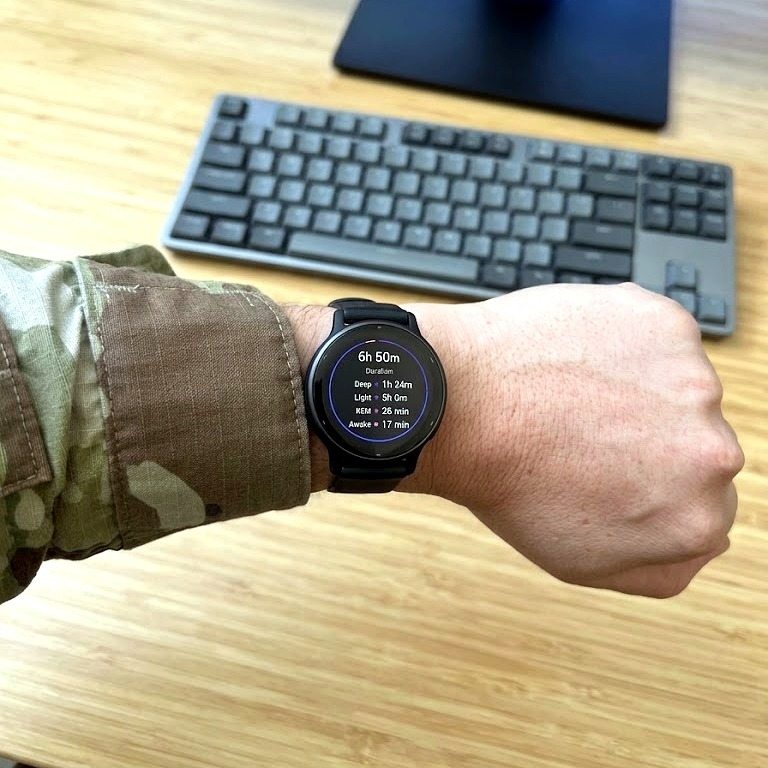

The Problem
Veterans and their families remain an understudied population in the United States, partly due to how small a subset of the general population they represent [1]. This gap in research and attention persists even though the veteran community shows significantly elevated rates of PTSD and related mental health struggles compared to civilians. Making the problem more urgent, the VA's most recent data estimates that approximately 17 veterans die by suicide each day, a number that, while lower than the historically cited "22 a day," remains alarmingly high [2]. This project is conducted in partnership with Elpis Alliance, a veteran-focused nonprofit that has made ending veteran suicide its central mission, built around a striking premise: that sleep, not trauma, is the root issue [1]. According to Elpis, over 80% of struggling veterans live with undiagnosed sleep disorders, and when sleep breaks down, conditions like PTSD, depression, and chronic pain often follow, sometimes culminating in suicide [1]. Rather than treating disrupted sleep as merely a symptom of trauma, Elpis argues it must be addressed first, as the foundation everything else depends on. To act on this belief, Elpis has built a tribe-based support model, pairing veterans with other veterans, and combines sleep studies, wearable technology, and trauma-focused care through programs like their Sleep Savant Program [1]. That program specifically screens, diagnoses, and supports veterans using tools including wearable tech and CPAP therapy [1]. This project is directly inspired by that same premise: that restoring and understanding sleep may be one of the most actionable ways to support veteran health. It asks whether that premise, currently driving grassroots intervention work, can also be explored and supported using data.

This project analyzes everyday wearable health data, specifically Garmin-collected metrics such as sleep stages, respiration rate, and blood oxygen content, to determine whether meaningful patterns exist between these metrics and key recovery outcomes, including heart rate variability (HRV) and related recovery statistics. These particular metrics were chosen because each reflects a different signal tied to breathing, HRV and sleep quality during rest. For example, the length and proportion of each sleep stage can indicate how fragmented or restorative a night's sleep was in reality. This focus on recovery is inspired by existing research connecting disrupted sleep to broader health risk in the veteran community, and by consumer-wearable studies showing that companies like Samsung and Apple have already demonstrated that devices like these can detect meaningful physiological signals during sleep. Some of these signals include signs of sleep-disordered breathing, with reasonable accuracy [3], [4]. However, that prior work centers on general-population disorder detection rather than recovery patterns within the veteran community specifically. This project shifts from the general-population focus to the veteran and military population and by examining what everyday, already-available wearable data can reveal about recovery and sleep quality. For instance, this study aims to determine whether metrics like REM sleep duration relate meaningfully to HRV, which is already a widely recognized indicator of physical recovery and readiness. Many veterans already own or have easy access to consumer wearables like Garmin devices, making this an accessible starting point rather than one requiring specialized equipment. The ultimate purpose of this project is to benefit the veteran community directly, not simply to produce an academic finding. It aims to help veterans understand which everyday habits and metrics are most strongly linked to their own recovery, so they can make informed, actionable changes. In doing so, it hopes to raise broader awareness of the sleep-related risks veterans face, and encourage those struggling to seek help when they need it.
References
- Elpis Alliance, "Home," Elpis Alliance. [Online]. Available: https://elpisalliance.org. [Accessed: Sep. 15, 2026].
- U.S. Department of Veterans Affairs, "2025 National Veteran Suicide Prevention Annual Report, Part 1," VA, 2025. [Online]. Available: link. [Accessed: Sep. 15, 2026].
- Samsung Electronics, "Sleep Apnoea Feature Instructions for Use," Samsung Electronics, 2024. [Online]. Available: link. [Accessed: Sep. 15, 2026].
- "Detection of sleep apnea using only inertial measurement unit signals from apple watch: a pilot-study with machine learning approach," PMC, 2024. [Online]. Available: link. [Accessed: Sep. 15, 2026].